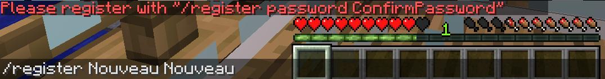
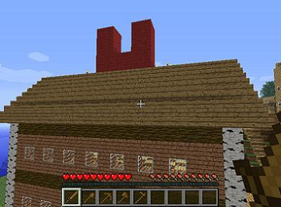

Lorsque vous vous connecter pour la première fois il se peut que vous ayez des difficultés à vous créer un compte(que vous soyez Kévin ou non n’est pas la question) c’est juste que ce système et assez rare parti les serveurs actuel, comme vous pouvez le constater ce site ne vous demande aucune inscription pour pouvoir jouer sur le serveur, c’est la une grande particularité de se serveur.
Vous reconnaissez peut être ce magnifique décor ? Eh oui lorsque vous vous connecter pour la première fois c’est ici que vous apparaissez.
Voici les étapes à suivre pour se créer un compte
Comme vous pouvez le voir la première étape consiste à faire "/register "votre mot de passe" "confirmer votre mot de passe" pour créer votre compte, c’est tout simple n’est-ce pas ? Ensuite :
C’est tout simplement cette commande là qu’il faudra répéter à chaque connexion sur votre compte, le "/login "votre mot de passe" " cependant lors de la première connexion cela n'est pas nécessaire, car elle ce fait automatiquement après le /register.
Important : Si vous ne pouvez plus bouger pour quelconque raison que vous ne pouvez ni bouger le curseur de deux pixel que vous êtes totalement bloquer et qu’aucun message n’est afficher sur le chat pas de panique !!! logez-vous, tout simplement.
Après cela il est conseillé de faire un tour de notre petit village comme ceci.
Pardon ? Gonflant vous dite ? Pas du tout cela va vous permettre de voir comment le serveur avance et quel sont les matériaux qui sont privilégier dans certain endroit du serveur
Remarque : près du Spawn ne se trouve pas toute les créations du serveur, heureusement sinon nous deviendrions allergiques au bois comme vous pouvez le voir.
Mais je vois que vous voulez tout de même passer à la suite, donc après avoir fait ce chemin vous avez surement du remarquer que vous ne pouviez rien casser ? Effectivement vous devez impérativement demander à un recruteur ou à un administrateur l’obtention du titre "Membre".
Dans le cadre rouge vous pouvez voir les recruteurs du serveur (d’autre à venir certainement) et dans le cadre orange vous pouvez voir le passage du joueur "Nouveau" passé membre après que Draxxo(moi) lui est donné les droits.
En espérant vous avoir aidé pour vos débuts, bon jeu et à bientôt sur le serveur Minecrafoss. La suite logique de ce tutoriel est naturellement le chapitre sur les Compétences .